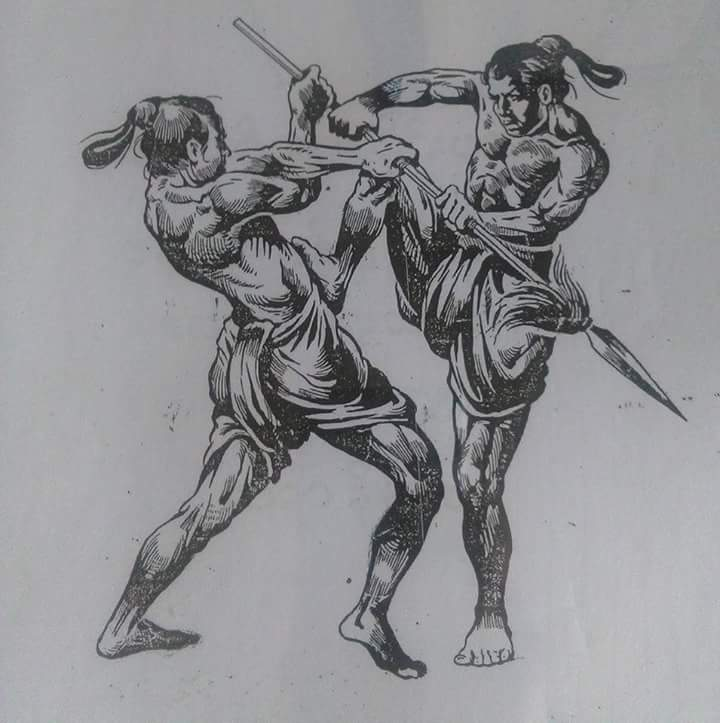
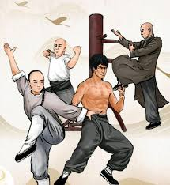
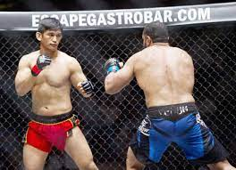

Myanmar Thaing (မြန်မာ့သိုင်း)

All the martial arts that originated in Myanmar are called Myanmar Thaing . "Myanmar Thaing"
includes not only the martial arts of the Burmans but also the traditional martial arts of various
other ethnic groups. It varies depending on the school. Some of the most notable are the Vanto , Van
Shay ; နန်းတွင်း သိုင်း ၊ Shan Thaing Monk Thaing မင်း ဇင် ၊ And so on.
The meaning of Thaing is "Tha" modification, painting, "Know" to see, to understand; "Storage"
storage; The "herd" is the circumference of the body. During the reign of the ancient Burmese kings,
they had to guard the royal halls with their swords. The one who takes care of them later is called
the next shepherd. Thaing must also be understood as overcoming.
In Joseph Jackson's Burmese-English dictionary, Thaing is defined as a royal scepter. သိုင်း က၊ သိုင်း ကစား၊ သိုင်း ကွက်၊ သိုင်း တက်၊ Clearing the sword against the enemy; Defined as defensive skills. Vanto, also known as Myanma Thaing; Van Shay Art is a cultural heritage of Myanmar. The ancient Burmese focused on physical and mental fitness, and fought in unarmed and unarmed battles. It is a traditional martial art used in two different types of weapons. These Vantovans were taught in secret. Descendants Only relatives are often secretive. Vanto Martial Arts, a Burmese heritage, dates back to 455 BC, and there are earlier records. သ ရေ ခေ တ ရာ ၊ ဗိ⁇ နိုး ၊ Han Lin Bagan _ ပင်းယ ၊ Yes . LandIt has been used for national defense throughout history and is now known as Myanma Thaing.
In Joseph Jackson's Burmese-English dictionary, Thaing is defined as a royal scepter. သိုင်း က၊ သိုင်း ကစား၊ သိုင်း ကွက်၊ သိုင်း တက်၊ Clearing the sword against the enemy; Defined as defensive skills. Vanto, also known as Myanma Thaing; Van Shay Art is a cultural heritage of Myanmar. The ancient Burmese focused on physical and mental fitness, and fought in unarmed and unarmed battles. It is a traditional martial art used in two different types of weapons. These Vantovans were taught in secret. Descendants Only relatives are often secretive. Vanto Martial Arts, a Burmese heritage, dates back to 455 BC, and there are earlier records. သ ရေ ခေ တ ရာ ၊ ဗိ⁇ နိုး ၊ Han Lin Bagan _ ပင်းယ ၊ Yes . LandIt has been used for national defense throughout history and is now known as Myanma Thaing.
Kung Fu (功夫)

In general, kung fu/kungfu refers to the Chinese martial arts also called wushu and quanfa. In
China, it refers to any study, learning, or practice that requires patience, energy, and time to
complete. In its original meaning, kung fu can refer to any discipline or skill achieved through
hard work and practice, not necessarily martial arts (for example, the discipline of tea making is
called the Gongfu tea ceremony). The Chinese literal equivalent of "Chinese martial art" would be
中國武術 zhōngguó wǔshù.
There are many forms of kung fu, such as Shaolin Kung Fu, Wing Chun, Tai chi, etc., and they are practiced all over the world. Each form of kung fu has its own principles and techniques, but is best known for its trickery and quickness, which is where the word kung fu is derived. It is only in the late twentieth century that this term was used in relation to Chinese martial arts by the Chinese community.[2] The Oxford English Dictionary defines the term "kung-fu" as "a primarily unarmed Chinese martial art resembling karate" and attributes the first use of "kung fu" in print to Punch magazine in 1966.[3] This illustrates how the meaning of this term has been changed in English. The origin of this change can be attributed to the misunderstanding or mistranslation of the term through movie subtitles or dubbing.
Martial arts play a prominent role in the literature genre known as wuxia (武俠小說). This type of fiction is based on Chinese concepts of chivalry, a separate martial arts society (武林; Wulin) and a central theme involving martial arts. Wuxia stories can be traced as far back as 2nd and 3rd century BCE, becoming popular by the Tang dynasty and evolving into novel form by the Ming dynasty. This genre is still extremely popular in much of Asia and provides a major influence for the public perception of the martial arts.
There are many forms of kung fu, such as Shaolin Kung Fu, Wing Chun, Tai chi, etc., and they are practiced all over the world. Each form of kung fu has its own principles and techniques, but is best known for its trickery and quickness, which is where the word kung fu is derived. It is only in the late twentieth century that this term was used in relation to Chinese martial arts by the Chinese community.[2] The Oxford English Dictionary defines the term "kung-fu" as "a primarily unarmed Chinese martial art resembling karate" and attributes the first use of "kung fu" in print to Punch magazine in 1966.[3] This illustrates how the meaning of this term has been changed in English. The origin of this change can be attributed to the misunderstanding or mistranslation of the term through movie subtitles or dubbing.
Martial arts play a prominent role in the literature genre known as wuxia (武俠小說). This type of fiction is based on Chinese concepts of chivalry, a separate martial arts society (武林; Wulin) and a central theme involving martial arts. Wuxia stories can be traced as far back as 2nd and 3rd century BCE, becoming popular by the Tang dynasty and evolving into novel form by the Ming dynasty. This genre is still extremely popular in much of Asia and provides a major influence for the public perception of the martial arts.
Mixed Martial Arts (MMA)

Mixed martial arts (MMA), sometimes referred to as cage fighting,[1] no holds barred (NHB),[2] and
ultimate fighting,[3] and originally referred to as Vale Tudo[4] is a full-contact combat sport
based on striking, grappling and ground fighting, incorporating techniques from various combat
sports from around the world.[5] The first documented use of the term mixed martial arts was in a
review of UFC 1 by television critic Howard Rosenberg in 1993.[6] The question of who actually
coined the term is subject to debate.[7]
During the early 20th century, various interstylistic contests took place throughout Japan and in the countries of the Four Asian Tigers. In Brazil, there was the sport of Vale Tudo, in which The Gracie family was known to promote Vale Tudo matches as a way to promote their own Brazilian jiu-jitsu style.[8] A precursor to modern MMA was the 1976 Ali vs. Inoki exhibition bout (which ended in a draw after 15 rounds), fought between boxer Muhammad Ali and wrestler Antonio Inoki in Japan, where it later inspired the foundation of Pancrase in 1993 and the Pride Fighting Championships in 1997.
In the 1990s, the Gracie family brought their Brazilian jiu-jitsu style, first developed in Brazil from the 1920s, to the United States which culminated in the founding of the Ultimate Fighting Championship (UFC) promotion company in 1993. The company held an event with almost no rules, mostly due to the influence of Art Davie and Rorion Gracie attempting to replicate Vale Tudo fights that existed in Brazil[8] and would later implement a different set of rules (example: eliminating kicking a grounded opponent), which differed from other leagues which were more in favour of realistic, street like fights.[9]
Originally promoted as a competition to find the most effective martial arts for real unarmed combat, competitors from different fighting styles were pitted against one another in contests with relatively few rules.[10] Later, individual fighters incorporated multiple martial arts into their style. MMA promoters were pressured to adopt additional rules to increase competitors' safety, to comply with sport regulations and to broaden mainstream acceptance of the sport.[3] Following these changes, the sport has seen increased popularity with a pay-per-view business that rivals boxing and professional wrestling.
During the early 20th century, various interstylistic contests took place throughout Japan and in the countries of the Four Asian Tigers. In Brazil, there was the sport of Vale Tudo, in which The Gracie family was known to promote Vale Tudo matches as a way to promote their own Brazilian jiu-jitsu style.[8] A precursor to modern MMA was the 1976 Ali vs. Inoki exhibition bout (which ended in a draw after 15 rounds), fought between boxer Muhammad Ali and wrestler Antonio Inoki in Japan, where it later inspired the foundation of Pancrase in 1993 and the Pride Fighting Championships in 1997.
In the 1990s, the Gracie family brought their Brazilian jiu-jitsu style, first developed in Brazil from the 1920s, to the United States which culminated in the founding of the Ultimate Fighting Championship (UFC) promotion company in 1993. The company held an event with almost no rules, mostly due to the influence of Art Davie and Rorion Gracie attempting to replicate Vale Tudo fights that existed in Brazil[8] and would later implement a different set of rules (example: eliminating kicking a grounded opponent), which differed from other leagues which were more in favour of realistic, street like fights.[9]
Originally promoted as a competition to find the most effective martial arts for real unarmed combat, competitors from different fighting styles were pitted against one another in contests with relatively few rules.[10] Later, individual fighters incorporated multiple martial arts into their style. MMA promoters were pressured to adopt additional rules to increase competitors' safety, to comply with sport regulations and to broaden mainstream acceptance of the sport.[3] Following these changes, the sport has seen increased popularity with a pay-per-view business that rivals boxing and professional wrestling.